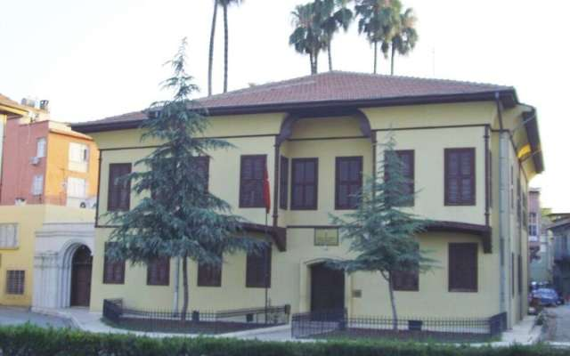
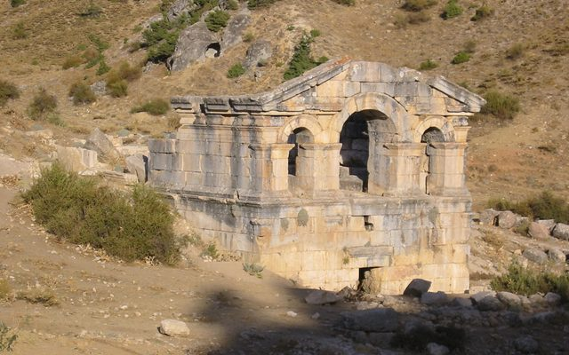

Inicio › Qué ver, provincia por provincia › Adana
La guía Kültür Varlıkları reúne 15 lugares en Adana: 5 museo, 5 yacimiento arqueológico, 4 castillo y edificio histórico, 1 rafting. A continuación encontrará lo más destacado, un mapa y la lista completa.
⭐ Lo más destacado

1 · Adana · MuseoCasa Museo de Atatürk en Adana
La Casa Museo de Atatürk en Adana ocupa una mansión histórica donde Mustafa Kemal Atatürk se alojó durante sus visitas a la ciudad.

2 · Adana · MuseoMuseo de Adana
El Museo de Adana forma parte de un gran complejo museístico a orillas del río Seyhan, instalado en una antigua fábrica que encarnaba la identidad algodonera y textil…

3 · Adana · Yacimiento arqueológicoYacimiento de Anavarza
Anavarza, la antigua Anazarbo, se encuentra al pie de una roca escarpada que se alza de repente en la llanura de Çukurova.
🗺 En el mapa
📍 Todos los lugares (15)
Museo (5)
Casa Museo de Atatürk en AdanaMuseoMuseo de AdanaMuseo Museo Monumento de Kuruköprü y Casa Tradicional de AdanaMuseo
Museo Monumento de Kuruköprü y Casa Tradicional de AdanaMuseo Museo de Mosaicos de MisisMuseo
Museo de Mosaicos de MisisMuseo Museo de Medicina y Odontología İlter UzelMuseo
Museo de Medicina y Odontología İlter UzelMuseo
Museo de AdanaMuseoMuseo Monumento de Kuruköprü y Casa Tradicional de AdanaMuseoMuseo de Mosaicos de MisisMuseoMuseo de Medicina y Odontología İlter UzelMuseoYacimiento arqueológico (5)
Yacimiento de AnavarzaYacimiento arqueológico Ciudad antigua de MagarsoYacimiento arqueológico
Ciudad antigua de MagarsoYacimiento arqueológico Misis (Mopsuestia)Yacimiento arqueológico
Misis (Mopsuestia)Yacimiento arqueológico Sirkeli HöyükYacimiento arqueológico
Sirkeli HöyükYacimiento arqueológico
Şar (Comana de Capadocia)Yacimiento arqueológicoCastillo y edificio histórico (4)
 Castillo de Ayas (Yumurtalık)Castillo y edificio histórico
Castillo de Ayas (Yumurtalık)Castillo y edificio histórico Taşköprü (Puente de Piedra)Castillo y edificio histórico
Taşköprü (Puente de Piedra)Castillo y edificio histórico Puente de VardaCastillo y edificio histórico
Puente de VardaCastillo y edificio histórico Yılankale (Castillo de la Serpiente)Castillo y edificio histórico
Yılankale (Castillo de la Serpiente)Castillo y edificio histórico